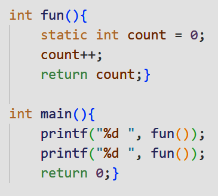

static variables
- they preserve their previous value in their previous scope and are not initialized again in the new scope.
- they remain in memorywhile the program is running.
- Static variables are allocated memory in initialized data segment, not stack segment.
- static variables are initialized exactly once at program start (before main()), before your function is ever called. The fact that it's a local variable doesn't affect this rule.
- static storage class variables areautomatically initialized to zeroif not explicitly initialized.
- hence, the count = 0in the program below is superfluous.
- 
- this program returns: 1 2
- Static variables should not be declared inside structure. The reason is C compiler requires the entire structure elements to be placed together (i.e.) memory allocation for structure members should be contiguous.
see also:
https://www.geeksforgeeks.org/static-variables-in-c/
Initialization of static variables in C